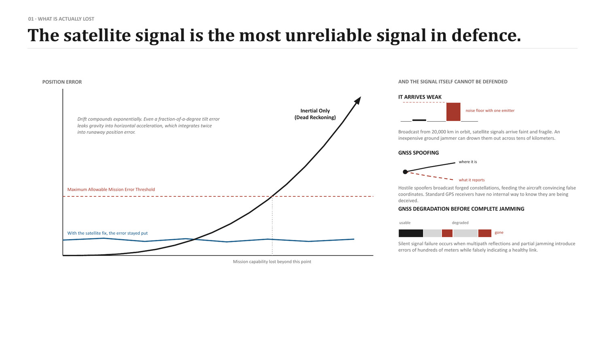
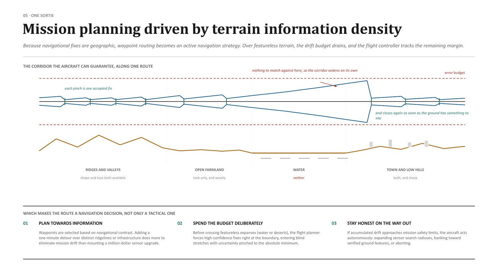

GNSS-denied navigation, at high speed
Satellite navigation is easy to jam and to spoof. Built for cruise missiles and jet effectors moving at 250+ metres per second, this subsystem combines a multi-element anti-jam CRPA antenna with terrain contour matching and classical optical scene matching.
Why Mach 0.8 at 250+ m/s breaks commercial drone navigation
Low-speed commercial drones, ISR quadcopters, and slow loitering munitions fly slowly and gently. At 40–50 m/s, optical sensors integrate light over standard exposures, tracking algorithms observe dozens of frames across a single feature, and processing latencies of 100 milliseconds introduce minimal position drift. In contrast, standoff cruise missiles operating at Mach 0.7–0.8 (240–270 m/s) change what the sensors can do.
| Engineering parameter | Commercial / ISR drone (55 m/s) | Hemlock cruise missile (250+ m/s) |
|---|---|---|
| Velocity / traverse rate | ~55 m/s (~200 km/h) | 250–270 m/s (Mach 0.8) |
| Latency sensitivity | 100 ms compute latency = 5.5 m drift | 10 ms compute latency = 2.55 m unguided transit |
| Ground motion blur | Standard 1/500s exposure acceptable | Requires ≤1/4000s global shutter + forward motion compensation |
| Terrain swath coverage | Slow, uniform nadir pass | High-rate swath: hundreds of square kilometres ingested per hour |
| Altitude variations | Nominal flat-ground AGL clearance | Himalayan valley contouring: thousands of metres relief in seconds |
| Inertial drift rate | Short 20–45 min sorties; bounded drift | 1,000–1,500 km transit (70–100 min); tactical IMU drift accumulates to kilometres |

At 250+ m/s, there is no margin for delayed frame ingestion. If an optical correlator takes 50 milliseconds to evaluate a terrain match, the missile has flown 12.5 metres past the calculated fix point. The correlator therefore runs on the mission computer with a measured worst-case budget, and each fix reaches the autopilot's filter as an observation. A late match costs accuracy; it never costs control.
Seven-element controlled reception pattern antenna (CRPA)
Satellite navigation signals arrive from 20,000-kilometre orbits at roughly -160 dBW. Ground-based electronic countermeasure stations emit multi-kilowatt broadband noise across entire combat sectors. A single passive antenna saturates instantly under this interference. Apollyon equips long-range effectors with conformal seven-element circular microstrip antenna arrays coupled to dedicated digital signal processors.
| Array configuration | 7-element conformal circular microstrip array |
| Frequency bands | NavIC L5 / S-band · GPS L1 / L2 · GLONASS L1 / L2 · Galileo E1 / E5 |
| Spatial null depth | > 45 dB attenuation toward ground emitters |
| Suppression capacity | Suppresses multiple high-power independent jamming emitters simultaneously |
| Threat envelope | Counters 200–250 km radius EW complexes (HQ IDS TPCR 2025 #33) |
| Spoofing rejection | Spatial coherence verification isolates false and non-orbital emitters |
Radio-frequency spatial null steering
Rather than relying on analog radio filters, the digital signal processor performs real-time adaptive beamforming. The processor continuously recalculates complex phase weights, steering steep spatial nulls—exceeding 45 dB attenuation—directly toward the azimuth and elevation of hostile ground emitters. Simultaneously, synthesized high-gain lobes track genuine satellites overhead. Because hostile jammers radiate from ground level while navigation satellites orbit at high elevation angles, geometry alone lets the antenna tell them apart.
Adversaries often attempt false-constellation spoofing by injecting synthetic satellite clocks. A single-element receiver cannot isolate false signals from authentic broadcasts. The multi-element array measures the angle-of-arrival and wavefront phase consistency across incoming channels. Multi-baseline spatial coherence checks continuously verify orbital elevation consistency against broadcast ephemeris. When anomalous phase correlations or ground-level emitter signatures are detected, the flight estimator drops the corrupted radio fixes and navigates on optical scene matching and inertial propagation instead.
High-speed scene matching
When jamming is too strong for the radio receiver, the aircraft switches to passive vision. The onboard computer matches live optical frames and ground elevations against pre-stored satellite reference tiles.
TERCOM (terrain contour matching)
A narrow-beam laser or radar altimeter samples ground clearance directly beneath the airframe. The system correlates this 1D elevation profile against an onboard digital elevation model, producing coarse horizontal coordinates in all weather conditions.
DSMAC (scene matching)
A camera captures the ground below and ahead. The onboard computer correlates that frame against a stored reference — a satellite tile or an edge map — and returns an absolute position fix. Nothing is transmitted.
What classical scene matching needs

Scene matching works by correlation, so it works best where the ground has texture and the reference fits the mission. Flat, featureless terrain is the hardest case, and seasonal or lighting changes decide how well a stored reference fits a live frame.
- Matching conditions: A reference captured in winter does not match a summer scene. The mission planner selects references that fit the season and the time of day, and flags the stretches where no good reference exists.
- Texture decides: Ridgelines, river bends, road junctions and built-up edges give the correlator something to lock onto. Routes are planned across that texture rather than around it.
- Standard compute: The correlator runs on the mission computer against open elevation and imagery products. There is no bespoke matching hardware and no classified reference imagery.
Real-time Kalman filtering & information-driven routing
The flight-control core fuses tactical MEMS inertial measurements, barometric pressure, CRPA satellite fixes, and intermittent optical correlations into a single continuous state estimate. Because the optical fix is weighted like any other observation, an intermittent match can pull the estimate back onto truth without ever being trusted unconditionally.
| Sensor | Measurement | Update rate | Operational role |
|---|---|---|---|
| Tactical IMU | Body rates & accelerations | 1,000 Hz | High-rate short-term propagation; smooths state between optical fixes. |
| CRPA Array | NavIC / GPS pseudorange | 10–20 Hz | Primary absolute position reference during non-saturated flight legs. |
| Altimeter (Laser / Radar) | Terrain clearance (AGL) | 50 Hz | Altitude validation and coarse TERCOM elevation profile matching. |
| Scene-matching camera | Ground imagery (visible / LWIR) | 10–30 Hz | Absolute horizontal position and yaw heading reset; collapses accumulated inertial drift. |
| Air Data Computer | Indicated & true airspeed | 50 Hz | Wind vector estimation and aerodynamic dynamic pressure validation. |
Platform note: Nightshade carries no active altimeter, radar or laser emitter. Avoiding active altimeters keeps the unit cost within its ₹1.5 crore target while simplifying system integration. Nightshade maintains altitude using fused barometric data and the vertical IMU channel, relying on its four-element CRPA and inertial reference for navigation. Active altimeters and optical scene matching are reserved for heavier long-range platforms like Hemlock, where low-altitude terrain contouring requires them.
Information-density flight routing
Because optical fixes depend on recognisable landmarks, flight paths are planned around information density. Over featureless expanses such as open water or uniform salt flats, inertial drift compounds unchecked. Mission planning algorithms lay waypoints along mountain ridgelines, riverbeds, and highway interchanges. Each time the weapon traverses a verified landmark, the uncertainty corridor collapses to a few tens of metres, holding the drift budget until the terminal phase.
Cross-platform deployment specifications
| Platform | Speed & flight regime | Navigation configuration | Terminal CEP |
|---|---|---|---|
| Hemlock | Mach 0.7–0.8 (250+ m/s) · 1,000–1,500 km | 7-element CRPA (NavIC/GPS) + classical scene matching against open DEMs; encrypted route storage; terminal LWIR silhouette match. | 25–50 m |
| Nightshade ADX-1 | 550 / 700 km/h · 300 km (Mk II) | Four-element CRPA + multiband GNSS + inertial reference, with autonomous terminal EO/IR homing (Mk II loitering munition). Target drones fly GNSS with an anti-jam front end, no seeker. | < 10 m |
| Piranha USV | Up to 65 km/h · 150–250 km sea transit (design target) | CRPA satellite receiver + coastline DSMAC matching + hydro-inertial dead reckoning. | < 2.0 m |
| Ahuti Interceptor | 498 km/h certified record · Short sprint | High-G tactical IMU coasting with ground-radar uplink correction; autonomous visual seeker terminal lock. | Direct collision |
Platforms carrying this subsystem
Supported by: Edge compute, Seekers.